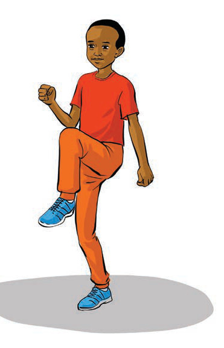
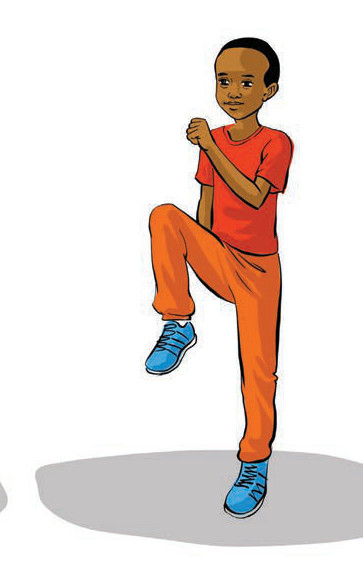

Push-up exercise strengthens the muscles of the arms, shoulders and chest. This helps players when participating in sports such as football and netball in making powerful passes as well as competing physically with opponents.
How to do push-ups:
Lie face down and support yourself on your hands and toes;
Raise your body by pushing up your arms until the arms are fully extended;
Lower your body slowly near to the floor without touching it; and
Repeat 10 to 15 times for 3 sets, by following steps (i-iii) as shown in Figure 3.


Figure 3: Doing a push-up exercise
Two people doing a high-knees running exercise.Activity 2(a) Do the high knees exercise individually.(b) In pairs, practice the high knees exercise.(c) Push-upsPush-up exercise strengthens the muscles of the arms, shoulders and chest.This helps players when participating in sports such as football and netball in making powerful passes as well as competing physically with opponents.How to do push-ups:(i)Lie face down and support yourself on your hands and toes;(ii)Raise your body by pushing up your arms until the arms are fully extended;(iii)Lower your body slowly near to the floor without touching it; and(iv)Repeat 10 to 15 times for 3 sets, by following steps (i-iii) as shown in Figure 3.A boy holds the starting push-up position with straight arms and a straight body.A boy lowers his body in a push-up, with his arms bent and chest close to the floor.Figure 3: Doing a push-up exercise